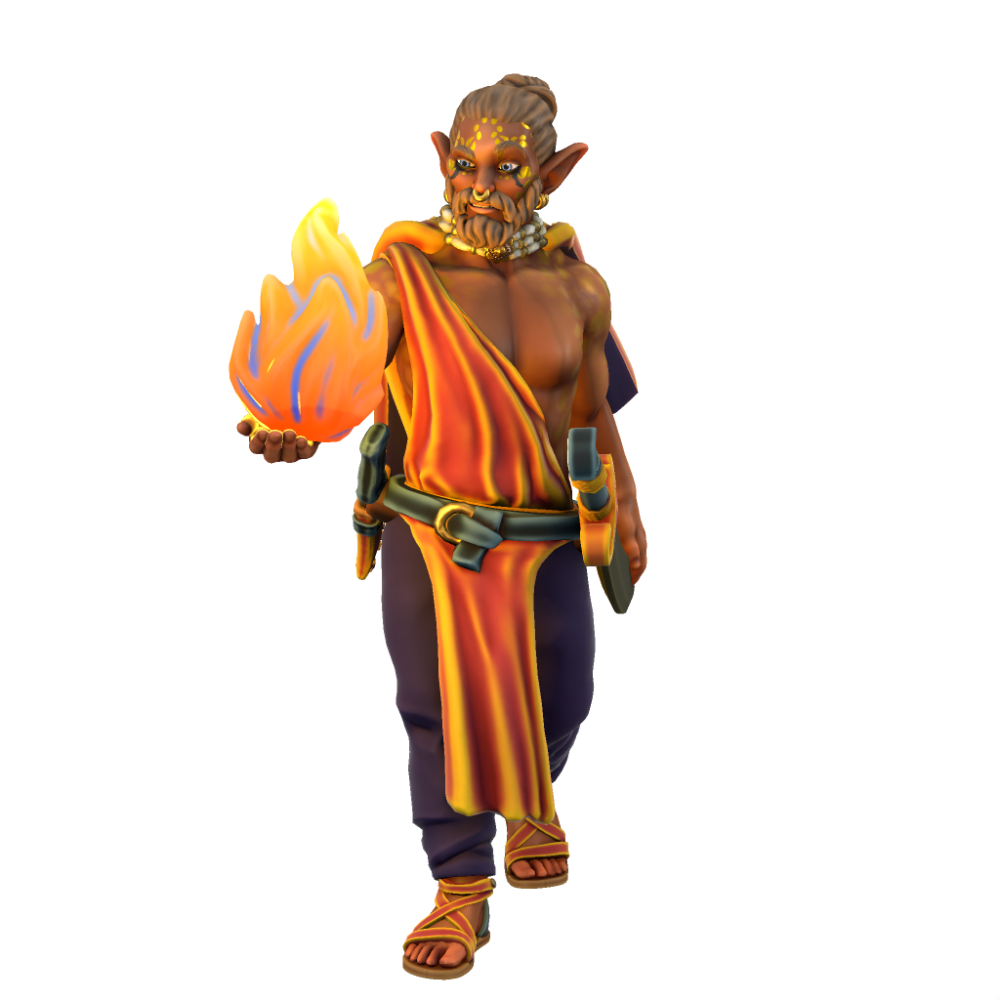

Kash Tarcata

When his Father died, Kash Tarcata invoked the long-neglected tradition for a Sultan to spend 14 years as a tetubad before ruling, passing the crown to his brother Ketukam as regent. He now roams the Satru mountains seeking Amundi and hunting monsters who threaten the citizens of Kashar.
Statblock (5e)
Kash Tarcata
Armor Class 10
Hit Points 32 (5d8 + 10)
Speed 30 ft.
Ki 3, save 15
Proficiency Bonus +3
Fey Rhea Amundi x1
| STR | CON | DEX | INT | WIS | CHR |
|---|---|---|---|---|---|
| +1 | +2 | +4 | +1 | +1 | +2 |
| 12 | 14 | 18 | 12 | 13 | 14 |
Multiattack Tarcata makes two sword attacks or one sword attack and one dagger.
Wild Monk Tarcata can expend ki to upcast a fey summon.
Scimitar Sword. Melee Weapon Attack: +4 to hit, range 5ft., one target. Hit: 1d6 + 4 slashing damage.
Dagger. Melee Weapon Attack: +3 to hit, range 5ft., one target. Hit: 1d4 + 2 piercing damage.
χ Patient Defense Take the Dodge action as a bonus action on your turn.
χ Step of the Wind Take the Disengage or Dash action as a bonus action on your turn, and your jump distance is doubled for the turn.